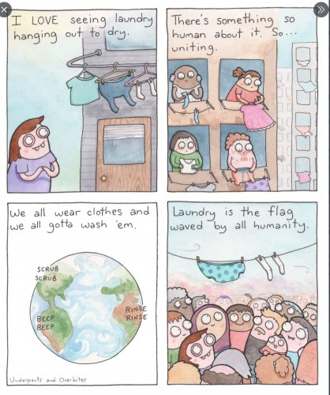

--Eckhart Tolle
"When you no longer believe everything you think,
you step out of thought and see clearly
that the thinker is not who you are."
----Eckhart Tolle
You know those thoughts you don’t like?
Those I should know betters and I messed ups and Others are doing better than I ams? The I’m a hopeless cases and I shouldn’t have said thats and I’m a bad person/ family member/ friend, a loser, failure, lazy, unkind, angry, selfish, unenlightened, unmotivated. Etc etc etc?
Yeah. Those.
Put all that delightful stuff in a great big mental laundry basket.
Throw in the feelings that come with those thoughts too- sadness, guilt, fear, depression, humiliation, anger.
Sweaty stuff, tear-stained stuff, unwanted stuff.
Toss it all in the basket.
There’s probably a lot of it.
Nothing fun in there, right? I mean, ew.
So it probably doesn't make sense to spend hours and hours examining the contents of this basket, analyzing what made this smell, what made that stain, and then trying to change each piece into spun gold or a zen garden or whatnot.
There doesn't seem to be any advantage in that kind of busy-work.
And then, maybe it's also ok not to spend a lot of time focused on any one particular piece in the basket. I mean, not much point zeroing in on any one sock or unmentionable, is there?
After all, it’s just a pile of laundry.
It can’t bite, kick, or laugh at you. It can’t torture you or leap out of the basket when your attention is elsewhere.
It sits there inanimate, harmless, minding its own business.
It has no power.
And now take a look inside the basket. Peer over the edge and get a good look.
Notice you have the ability to do that.
Whatever is looking at that pile – whatever sees the stinky thoughts- is it scared, depressed, angry?
If you get a ‘yes’, put that yes and the accompanying feeling in the basket too.
And then notice what’s left.
What’s not in the basket? What’s outside the basket, still seeing it?
Whatever that is, which is more likely to be what you are? Dirty pants, or whatever knows that pants are in the basket?
Now of course you may not be what knows, either.
But you’re no sock, that much is clear.
Because you can't be both the thing that’s seen and the thing that sees it.
Yes, a case can be made that you are indeed both, or even, neither.
And certainly The Mind-Tickler has made many such cases, many times.
But today we’re playing with a less-dogmatic
middle way.
A practical and integrate-able way into everyday life which provides some relief and clarity.
Even if it’s not the be-all, end-all, only way.
Because thoughts and feelings in a laundry basket are not you.
In which case, the next time life feels really challenging, there’s no harm in getting a little distance from the wash.
There’s no harm in putting difficult thoughts and feelings all into a heap, stepping back, taking a look at the collective pile,
And then noticing that you-
whatever that even is-
are looking at the pile.
Aware of the pile.
Not the pile.
Now of course no one ever has to do this.
It’s just that getting a little distance from stinky basket stuff feels pretty good.
It feels sane, and so much better, to get a little space from the wacky notion that what you are is a thought/feeling sock.
Because less identification with crazy is a wonderful thing.
Feels pretty good.
Something knows this.
And it’s not the laundry.
.
Click here to watch Judy on Buddha at the Gas Pump
“Nobody told us that what we are is a point of awareness. This isn’t something we’re taught. Rather, we were taught to identify with our name. We were taught to identify with our birth date. We were taught to identify with the next thought that we have. We were taught to identify with all the memories our mind collects about the past. But all that was just more thinking. When you stand in your own authority, you meet that ultimate mystery that you are. Even though it may be at first unsettling to look into your own no-thingness, you do it anyway. Why? Because you no longer want to suffer. Because you’re willing to be amazed. You’re willing to be surprised. You’re willing to realize that maybe everything you’ve ever thought about yourself really isn’t true.”
--Adyashanti
